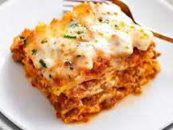

Lasagna Recipe

Ingredients:
- 2 teaspoons extra virgin olive oil
- 1 pound ground beef chuck
- 1/2 medium onion, diced (about 3/4 cup)
- 1/2 large bell pepper (green, red, or yellow), diced (about 3/4 cup)
- 2 cloves garlic, minced
- 1 (28-ounce)can good-quality tomato sauce
- 1/2 pound dry lasagna noodles (requires 9 lasagna noodles - unbroken)
Instructions:
For this recipe, we are essentially making a thick, meaty tomato sauce and
layering that with noodles and cheese into a casserole. Here's the
run-down:
- Start by making the sauce with ground beef, bell peppers, onions, and a combo of
tomato sauce, tomato paste, and crushed tomatoes. The three kinds of tomatoes gives
the sauce great depth of flavor.
- Let this simmer while you boil the noodles and get the cheeses ready. We're using
ricotta, shredded mozzarella, and parmesan -- like the mix of tomatoes, this 3-cheese
blend gives the lasagna great flavor!
- From there, it's just an assembly job. A cup of meat sauce, a layer of noodles, more
sauce, followed by a layer of cheese. Repeat until you have three layers and have
used up all the ingredients.
- Bake until bubbly and you're ready to eat!